Contemporary Calligraphy
Welcome to our exploration of Contemporary Calligraphy, a vibrant and ever-evolving expression of
artistic
lettering that pushes the boundaries of traditional styles. In this journey, we delve into
the innovative world of
contemporary calligraphy, where creativity knows no bounds.
What is Contemporary Calligraphy?
Traditional calligraphy is an ancient art form that involves the creation of decorative handwriting or
lettering using a broad-tipped instrument, brush, or other writing tools. It is a visual expression of
language, conveying both the meaning of words and the aesthetic beauty of the written form.
Features Of Contemporary Calligraphy
Diverse Style
Discover a multitude of styles ranging from minimalistic and abstract to vibrant and experimental.
Contemporary calligraphy artists often push the boundaries, creating visually stunning and
unconventional pieces.
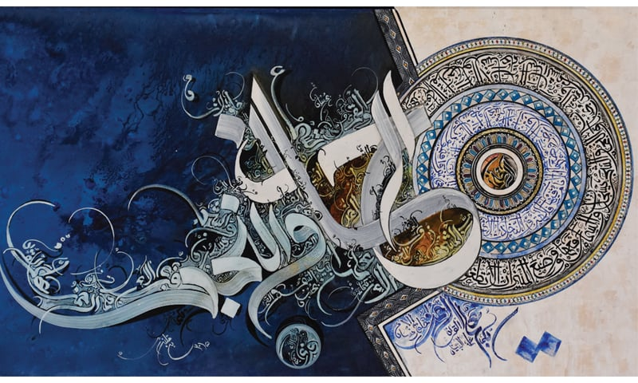
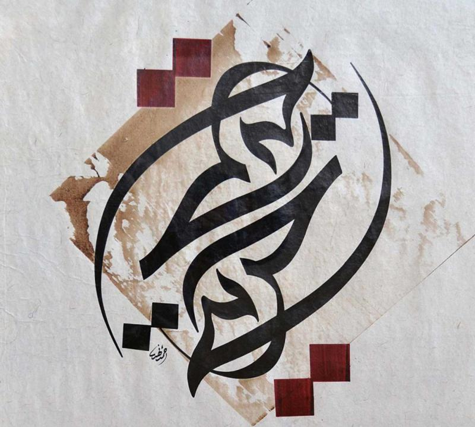
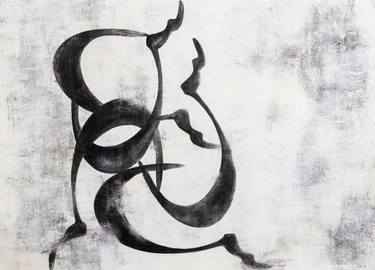
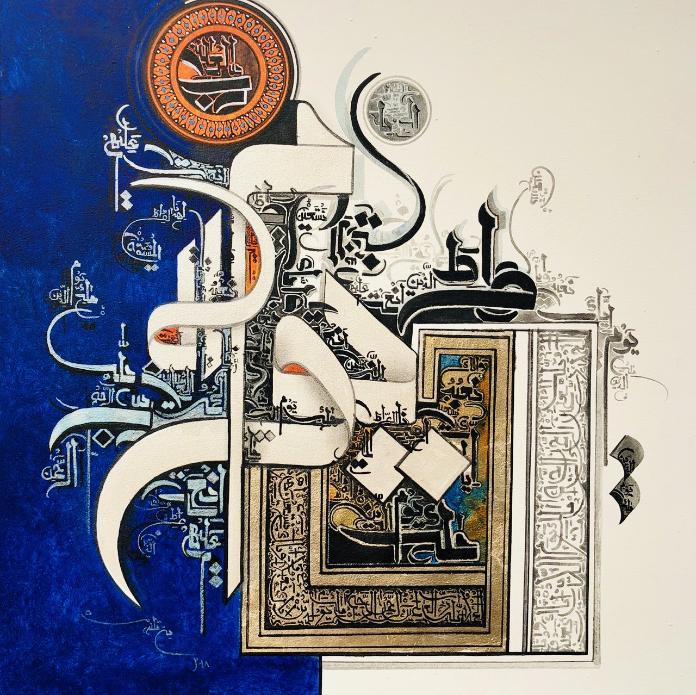
Expressive Typography
Experience the power of words through expressive typography. Contemporary calligraphy often focuses on conveying emotion and meaning through the careful arrangement of letters and words.
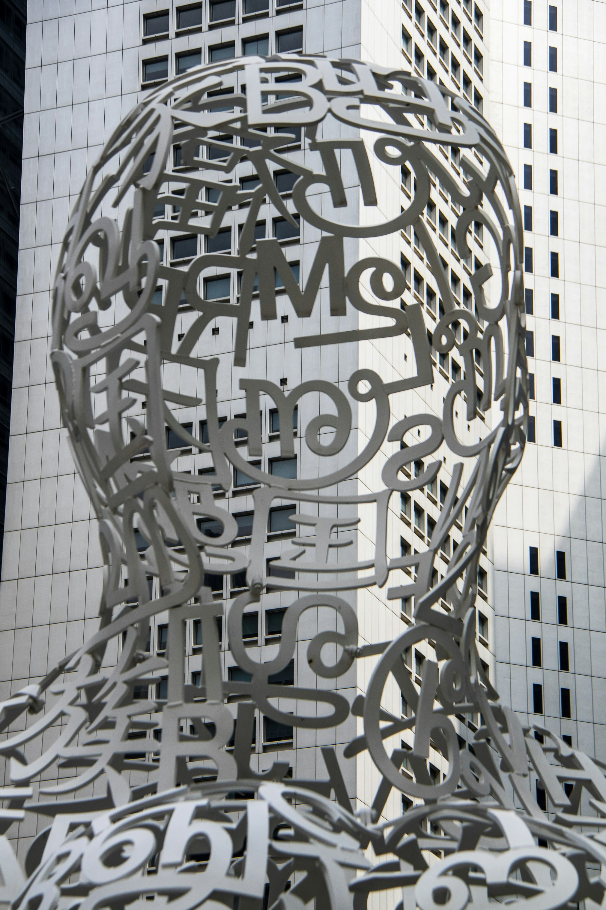
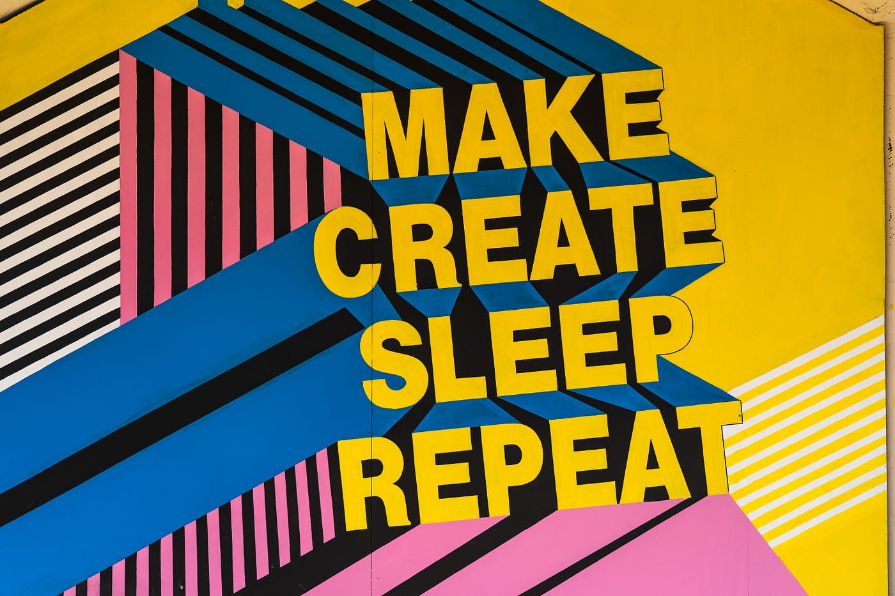
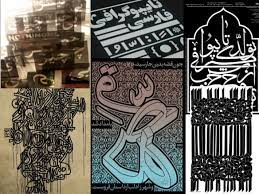
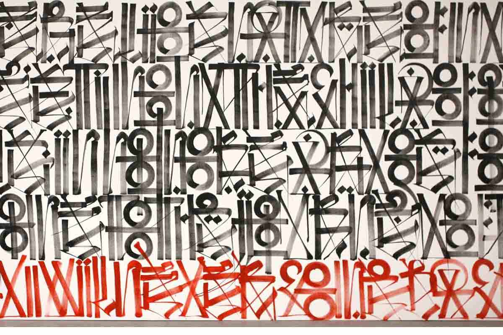
Key Elements of Contemporary Calligraphy
Unconventional Tools and Materials
Contemporary calligraphy often takes unexpected forms, using a variety of tools beyond the traditional pen and ink. Artists experiment with brushes, markers, and even digital tools to push the boundaries of what calligraphy can be.
Experimentation and Creativity
Contemporary calligraphy often takes unexpected forms, using a variety of tools beyond the traditional pen and ink. Artists experiment with brushes, markers, and even digital tools to push the boundaries of what calligraphy can be.
Popular Styles and Trends
Brush Lettering
Explore the expressive and dynamic world of brush lettering, where bold strokes and fluid lines create a sense of energy and movement in the letterforms.
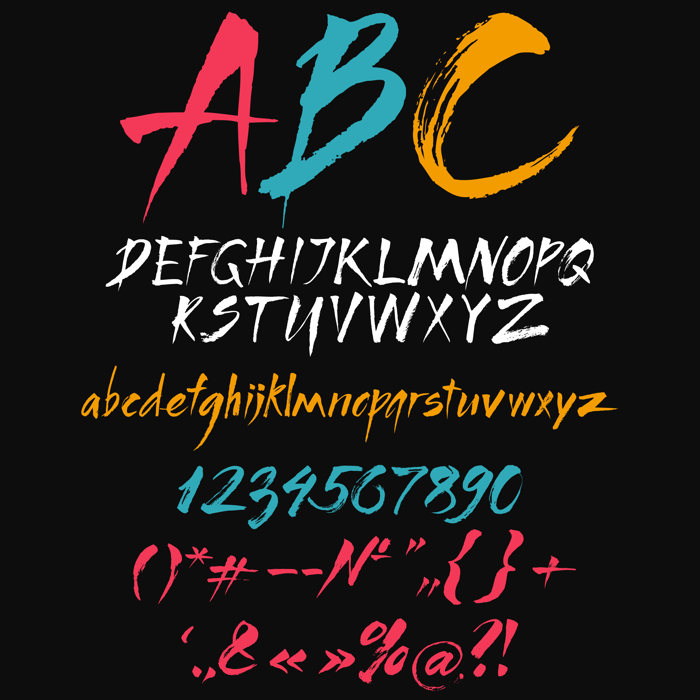
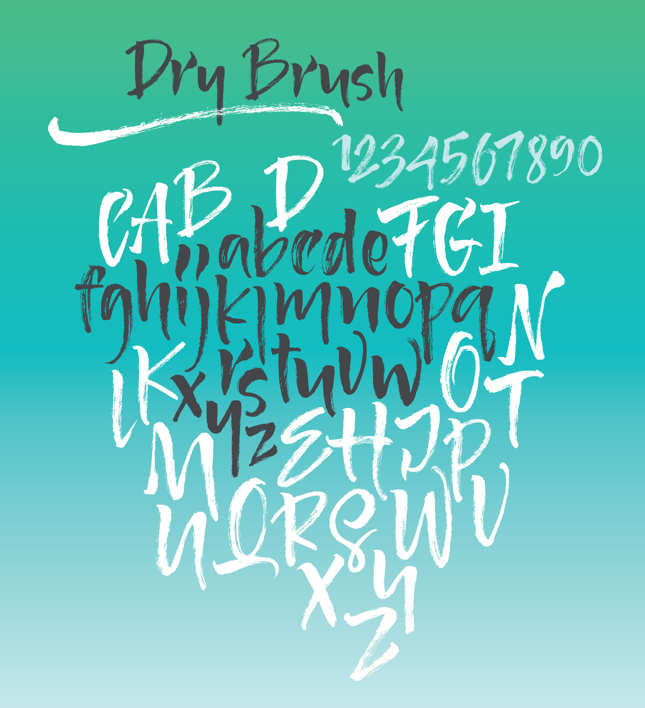
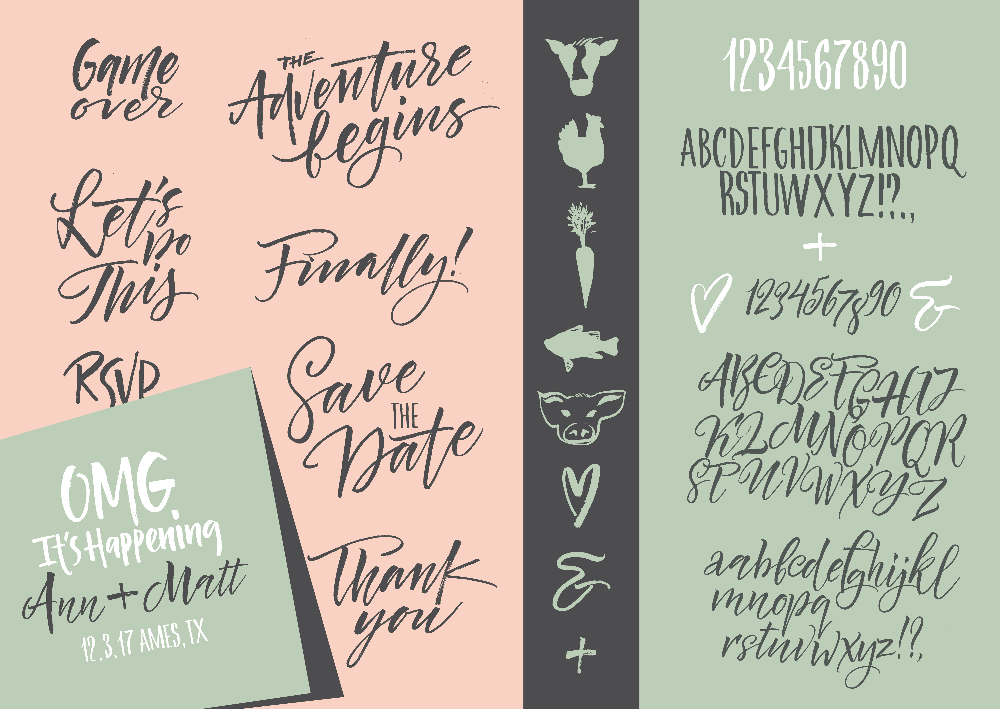
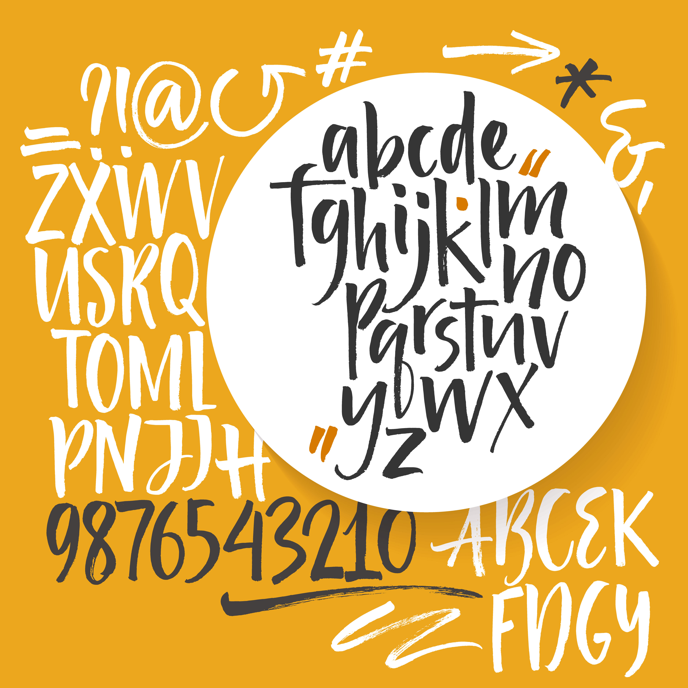
Modern Script
Discover contemporary script styles that combine traditional calligraphic elements with a fresh, modern twist. These scripts often prioritize readability while maintaining a sense of individuality.
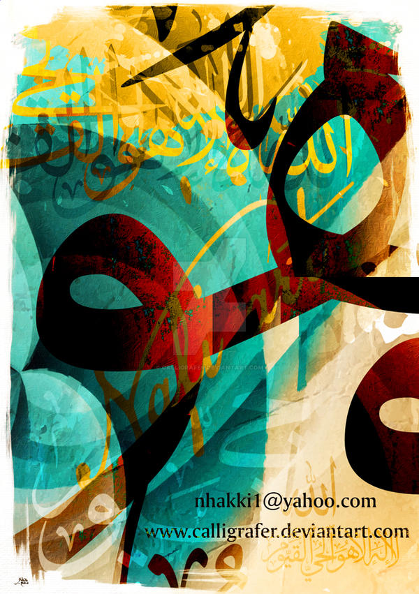
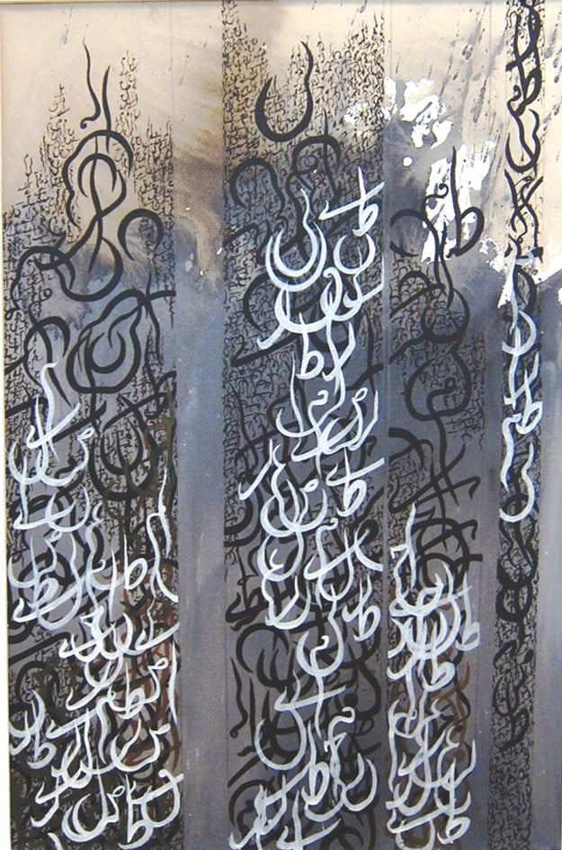
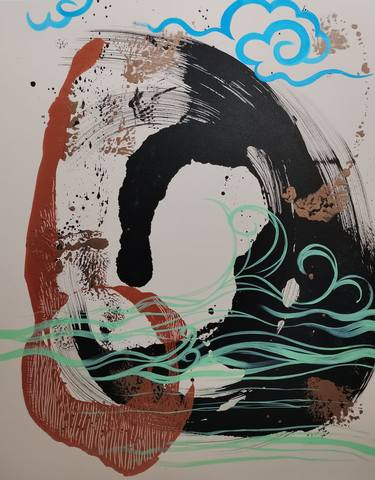

Experimental Letterforms
Dive into the avant-garde realm of experimental letterforms, where calligraphers play with shapes, sizes, and arrangements to craft visually striking compositions that challenge traditional norms.
Conclusion
Contemporary calligraphy is a journey of self-expression, innovation, and celebration. As we explore this ever-evolving art form together, let's embrace the diversity of styles and forge new paths in the world of calligraphy.